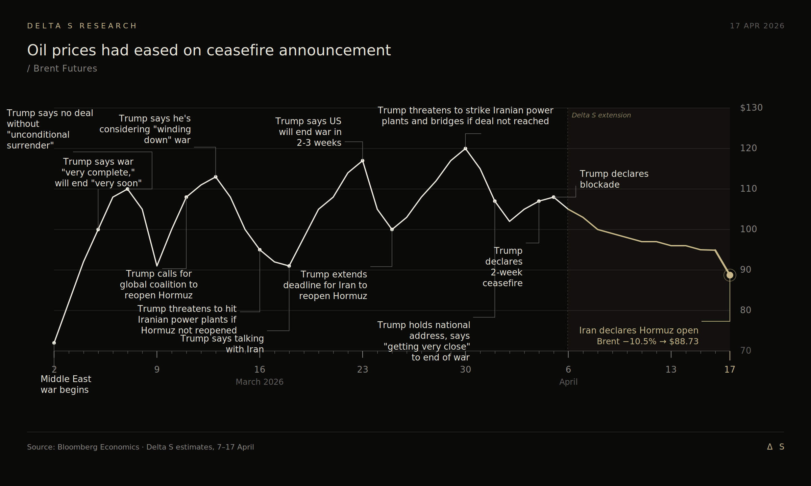

Record highs, VIX below 20, a ceasefire to close the week. On paper, risk-on. Below the surface, the vol surface flattened to where short premium no longer sells at a fair price.
The S&P closed above 7,000 for the first time on Wednesday and pushed through 7,100 on Friday, finishing at 7,126.06, up roughly 4.5% on the week. The Nasdaq ran thirteen straight green days, longest streak since 1992.
That tension is the whole week.

The surface has left the regime
The index looks calm because dispersion has left the surface. Twelve of the last thirteen rally sessions closed positive. The largest intra-rally drawdown was 0.11%. Realized vol is approaching zero. The VIX never seriously threatened the 30 level it approached in late March and closed Friday at 17.48. VIXEQ held in the 42-45 range. Implied correlations compressed.

Heading into the week, CTAs were 46% max short the S&P. UBS flow work flagged 6,950 as the level where trend models flip net long. The index cleared that line on Wednesday. The mechanical bid is now in, and supply into it is thin.
This is what happens when systematic flows carry the index while individual names churn underneath. VIX compresses. VIXEQ stays bid. Correlations fall. Selling premium into this quiet needs a structural reason. The tape alone is not one.
The earnings ceiling
ASML and TSMC both reported strong quarters with raised guides. Both stocks sold off.
ASML printed Q1 revenue €8.8bn at 53.0% gross margin and raised full-year 2026 to €36-40bn. The stock faded on China exposure and a 2027 low-NA EUV production target of 80 units that missed the 90-unit whisper. TSMC printed $35.9bn, +40.6% YoY. HPC made up 61% of quarterly revenue. Q2 guided to $39.0-40.2bn, full-year growth raised above 30%. Capex moved to the top of the $52-56bn range. Wei called it a "multi-year AI megatrend." The stock closed down around 3%.
The pattern: fundamentals clear the line, guides go up, stocks go down. The earnings print no longer sets the price. The whisper does. And the whisper runs hotter than anything these companies are willing to put on the tape.
If every strong report sells off, realized dispersion stays floored. No single-name catalyst clears the bar, so the index drifts on flows and the vol of vol dies.
Geopolitics faded out
The ceasefire negotiated through Pakistani mediation in early April called for an immediate halt to hostilities, the reopening of Hormuz, and a 15-20 day negotiation window. The Islamabad talks collapsed on April 12 over Iran's refusal to provide an affirmative commitment on nuclear non-proliferation. Trump's response was a U.S. Navy blockade of Iranian ports, effective Monday 10:00 ET.
Brent touched just above $100 intraday, WTI ran north of $104. Monday close: Brent $99.36, WTI $99.08. Tanker traffic through Hormuz was still running at a fraction of pre-war volumes. The blockade confirmation added nothing the market had not priced.

By Tuesday, WTI had given back nearly 8% to $91.28 as regional mediators laid the groundwork for a second round of talks. By Wednesday the White House was publicly expressing optimism. By Friday, Iranian Foreign Minister Abbas Araghchi announced Hormuz was "completely open" to commercial traffic, and Israel and Lebanon had signed a ceasefire the day before. Oil gave back roughly 11% on the headline. The round trip made the direction clear. Risk premium has moved off geopolitics. Earnings durability and AI capex carry that weight now.
The software tape told the same story at the open. Anthropic's Mythos Preview launch on April 7, held back from general release and restricted to Project Glasswing partners, had hammered SaaS the prior week. Monday reversed. IGV closed up 4.9%, its best day in over a year, though Oracle carried most of the move on an 11% single-day rip. Mythos remains unverified outside Glasswing. Markets stopped pricing what they could not see.
The market has priced a resolution. The S&P moved from 6,343 at the March 30 low to 7,126 by Friday without a meaningful consolidation. That entire move happened before Hormuz formally reopened and before any signed agreement. If the second round of talks fails, or if Hezbollah strikes rupture the Israel-Lebanon ceasefire, there is no risk premium cushion. The VIX at 17 is not priced for re-escalation.
Our trades this week
The market was structurally hostile to short premium entries. IV compressed across the board as the war narrative faded and AI earnings landed clean. NVDA broke $200, but ATM IV drifted lower even as price pushed higher. The compensation for selling variance was gone.
So we harvested. The bull put spread on NET we opened last week, sized on the view that the Mythos-driven SaaS shock was overreacted, closed clean. We also took profit on the bull put spreads in NVDA and gold on this week's rally.
We then redirected to adjacent names in the AI hardware stack where IV had not yet mean-reverted: LITE, MU, and SNDK. Each carries its own catalyst. Lumentum on the hyperscaler optical demand story. Micron on the HBM4 ramp into Nvidia Vera Rubin. SanDisk on the NAND cycle and the April 30 earnings print. The index and NVDA were trading as if nothing could move them. These names had not yet repriced to that assumption. We structured bull put spreads on each, with short strikes set well below spot to let the underlying theses carry the positions.
Looking ahead
Two things matter next week. The first is whether the second round of U.S.-Iran talks converts Friday's Hormuz opening into a durable settlement. The second is whether the Nasdaq's streak survives its first real test, which could come from a failed talks round, an AI-capex disappointment in next week's mega-cap earnings, or a hot PCE print.
Short premium has compressed. We are sizing down, staying selective, and waiting for the next volatility event to reset the market.